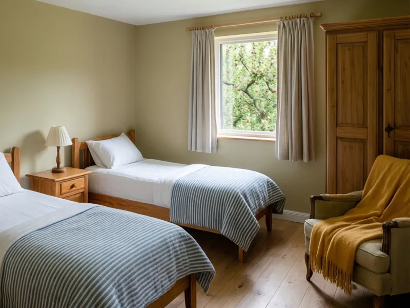

Les chambres
Chacune a sa salle de bain. Les prix sont par nuit pour deux personnes, petit-déjeuner compris.

La chambre Jardin
Au rez-de-chaussée, avec une porte vitrée sur le jardin.
dès 95 €

La chambre Grenier
Sous les poutres, avec le ciel au-dessus du lit.
dès 105 €

La chambre Verger
Deux lits simples et une fenêtre sur les pommiers.
dès 90 €